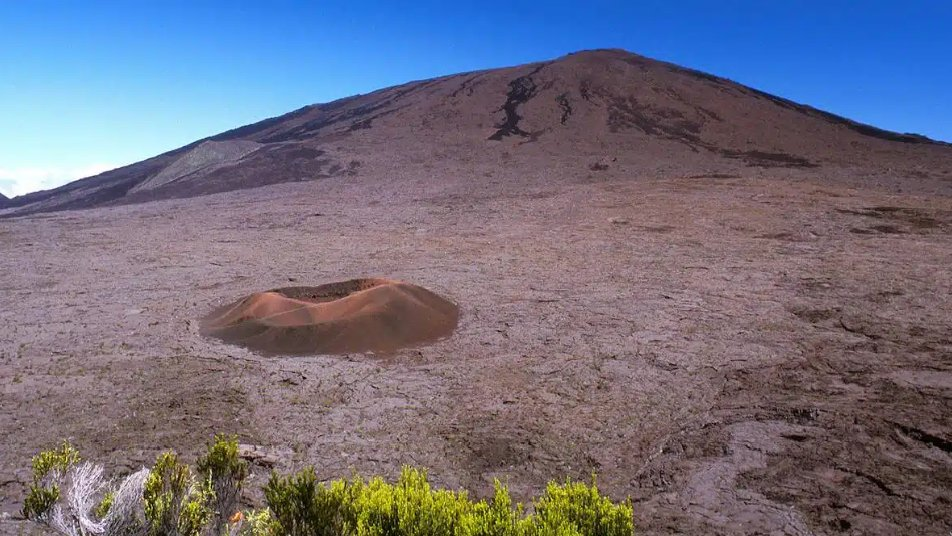

10 h · retour vers 17 h
Journée Piton de la Fournaise
380 € berline · 1 à 4 places420 € van · 1 à 8 places
Programme
- 1Départ matinal
- 2Plaine des Sables, étendue minérale rouge et noire
- 3Cratère Dolomieu depuis le Pas de Bellecombe
- 4Cratère Commerson
- 5Point de vue du Nez de Bœuf
- 6Pause collation
- 7Maison du Volcan (entrée non incluse)
- 8Belvédère de Bois Court sur Grand Bassin
- 9Boutique de produits péi
- 10Retour vers 17 h
Inclus
- Eau et collation
- Dégustation de produits péi et rhums arrangés
- Oreillettes de traduction toutes langues
Non inclus
- Entrées de sites
- Repas chez partenaire
Itinéraire personnalisable selon votre rythme et vos envies : RTS établit des devis sur mesure.